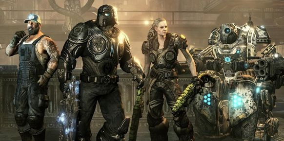

HOME
How to Beat Gears of War 3 Horde on Insane Difficulty
Gears of War 3 is a third person shooter game in which Horde mode is one of the multiplayer game types. In Horde mode, waves of enemies
called Locust are attacking you and any coop gamers you may have with you. Additionally there are also Lambent enemies, who are Locust
Infected with Immulsion, a powerful fuel found on the planet Sera, where the game takes place. Lambent are hostile to the Locust and the player,
and they also combust upon death. This Web Quest will show you how to beat Horde mode on the
Insane difficulty setting, which is the hardest setting there is.

**Be warned, this is not an easy task for even the most skilled player. Completing it entirely with zero failures is near impossible.**